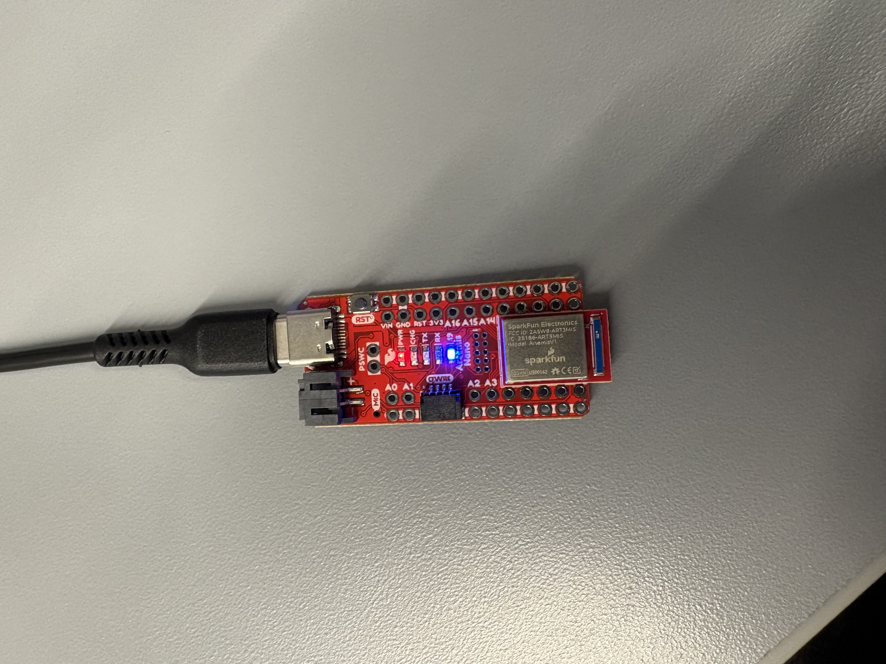
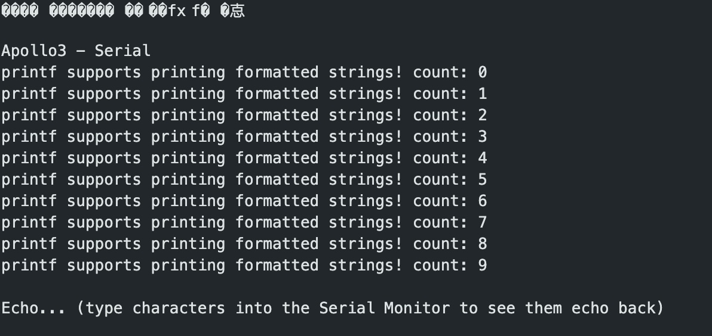

1a
Task 1
I was able to connect the Artemis board to my computer via Bluetooth.
Task 2
I uploaded and ran the example file Blink in 0.1Basics. The blue LED on the Artemis blinked.
Task 3
I uploaded and ran the example file Example4_Serial in Apollo3. The Artemis board successfully output serial inputs.
Task 4

I uploaded and ran the example file Example2_analogRead in Apollo3 to test the Artemis temperature sensor. To test it, I blew on the sensor to create varied outputs.
Task 5

I uploaded and ran the example file Example1_MicrophoneOutput in PDM to test the Artemis board microphone. To test it, I tried to hold a couple of notes using my voice. The board was able to output those frequencies, but inconsistently.
1b
Task 1
In this task, I sent a string from my computer to the Artemis board using the ECHO command. The board then returned the string in the Arduino sketch output.
case ECHO:
char char_arr[MAX_MSG_SIZE];
// Extract the next value from the command string as a character array
success = robot_cmd.get_next_value(char_arr);
if (!success)
return;
tx_estring_value.clear();
tx_estring_value.append("Robot says -> ");
tx_estring_value.append(char_arr);
tx_estring_value.append(":)");
tx_characteristic_string.writeValue(tx_estring_value.c_str());
break;
Task 2
In this task, I filled in the SEND_THREE_FLOATS case in the Arduino code to print the three float values sent from my computer.
case SEND_THREE_FLOATS:
float flt_A, flt_B, flt_C;
success = robot_cmd.get_next_value(flt_A);
if (!success) return;
success = robot_cmd.get_next_value(flt_B);
if (!success) return;
success = robot_cmd.get_next_value(flt_C);
if (!success) return;
Serial.print("Three Floats: ");
Serial.print(flt_A);
Serial.print(",");
Serial.print(flt_B);
Serial.print(",");
Serial.println(flt_C);
break;
Task 3
In this task, I filled in the GET_TIME_MILLIS case in the Arduino code to send the computer a string starting with T: indicating the current time in milliseconds.
case GET_TIME_MILLIS:
int time;
time = (int)millis();
tx_estring_value.clear();
tx_estring_value.append("T:");
tx_estring_value.append(time);
tx_characteristic_string.writeValue(tx_estring_value.c_str());
break;
Task 4
In this task I set up a notification handler for time data transmissions. The handler uses the ble.start_notify(ble.uuid['RX_STRING'], notification_handler) command to recieve BLE GATT characteristic changes then output them as print statements.
# notification handler
def notification_handler(uuid, data):
# make the data into a string
received_string = ble.bytearray_to_string(data)
# parse key:value pairs
key_value_pairs = dict(pair.split(":") for pair in received_string.split(","))
# get time value
time_value = key_value_pairs.get("T", "Time not found")
print(f"Time value: {time_value}")
ble.start_notify(ble.uuid['RX_STRING'], notification_handler)
Then, for part 7, I modified the notification handler to read both temperature and time data.
def notification_handler2(uuid, data):
# make the data into a string
received = ble.bytearray_to_string(data)
# parse Time:...-Temp:...
value_pairs = dict(pair.split(":") for pair in received.split("-"))
time_value = value_pairs.get("Time", "Time not found")
temp_value = value_pairs.get("Temp", "Temp not found")
print(f"Time value: {time_value}")
print(f"Temp value: {temp_value}")
Task 5
For this task, I wrote a loop in Python that runs the GET_TIME_MILLIS command 100 times. The data was transmitted to my computer every 57–66 milliseconds, which is about 15–17 transmissions per second.

Task 6
In Task 6, I created the SEND_TIME_DATA case in the Arduino sketch to record time data 100 times in a global array (timeArray) and then send it to my computer. I used two for loops: the first to collect and store values, and the second to send the data to the computer piecewise.
case SEND_TIME_DATA:
for (int i = 0; i < 100; i++) {
int Millis;
Millis = (int)millis();
timeArray[i] = Millis;
}
for (int i = 0; i < 100; i++) {
tx_estring_value.clear();
tx_estring_value.append("T:");
tx_estring_value.append(timeArray[i]);
tx_characteristic_string.writeValue(tx_estring_value.c_str());
delay(10);
Serial.println(timeArray[i]);
}
break;
Task 7
In this task, I implemented the GET_TEMP_READINGS command in the Arduino sketch to send temperature and time readings. I used two for loops: the first fills two global arrays to store temperature and time data 100 times, and the second sends those arrays piecewise to the computer. I also adjusted my notification handler to handle the new data stream.
case GET_TEMP_READINGS:
for (int i = 0; i < 100; i++) {
int current;
float temp;
current = (int)millis();
temptime[i] = current;
temp = (float)getTempDegF();
tempArray[i] = temp;
}
for (int i = 0; i < 100; i++) {
tx_estring_value.clear();
tx_estring_value.append("Time:");
tx_estring_value.append(temptime[i]);
tx_estring_value.append("-");
tx_estring_value.append("Temp:");
tx_estring_value.append(tempArray[i]);
tx_characteristic_string.writeValue(tx_estring_value.c_str());
delay(10);
Serial.println(tempArray[i]);
}
break;
Task 8
The first method of recording timestamp data—looping data transmission using the GET_TIME_MILLIS command—recorded data significantly slower than the second method. However, continual transmission enables real-time updates. This advantage is amplified by the fact that transmissions occur more quickly using the first method, making it more suitable for real-time feedback rather than rapid bulk data collection.
On the other hand, the second method provides better accuracy for offline analysis. Because it rapidly collects many data points before transmitting, it is better for tasks like building a clear picture of the motion or temperature of the chip over time.
Since the sketch takes up about 31 KB of program storage, there is still substantial memory available for buffering additional data, depending on the board’s remaining dynamic memory and any other runtime allocations.
References
For this lab, I referenced the student pages of Kotie Ashie and Jack Long for help with Tasks of Lab 1b. I also used AI for syntax checking and troubleshooting.